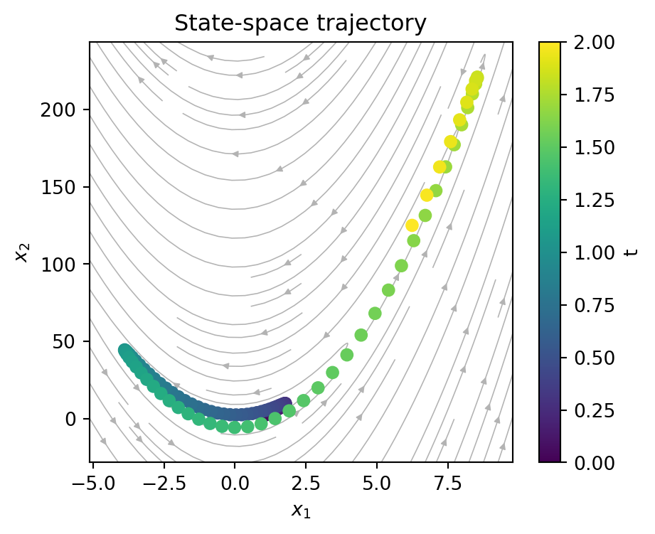
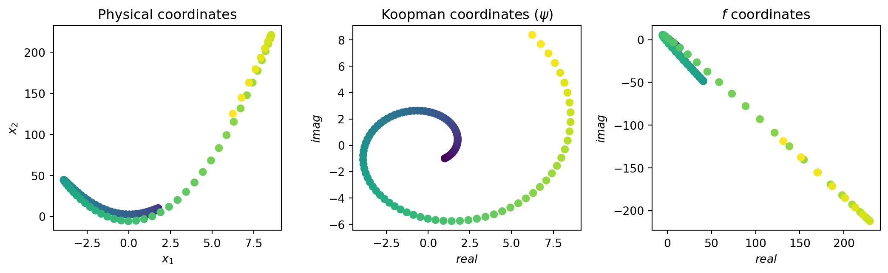
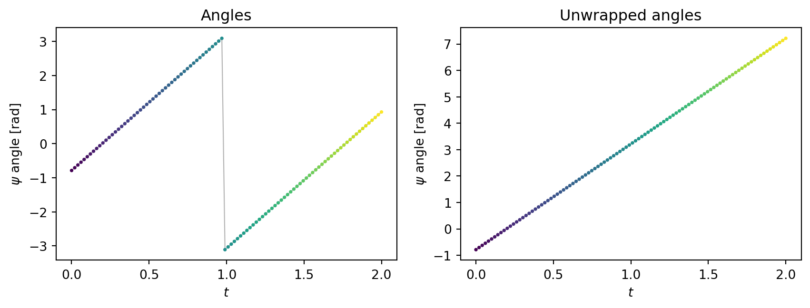
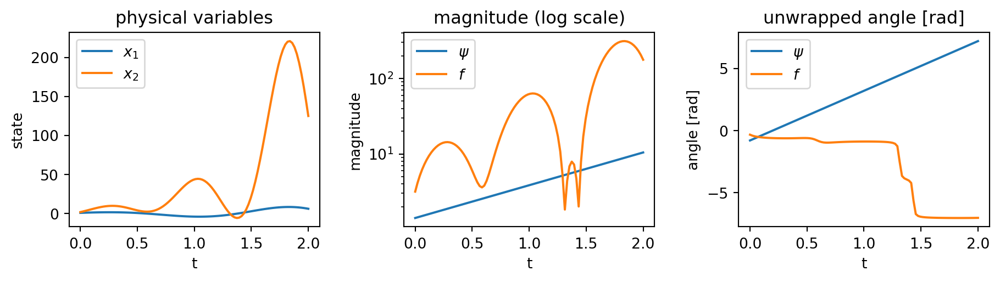
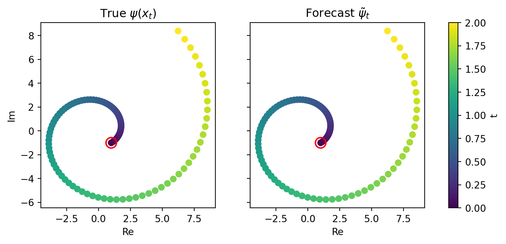
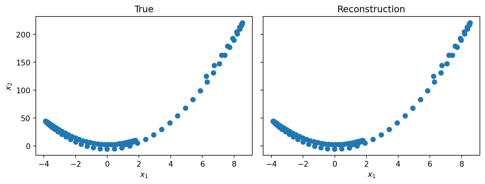
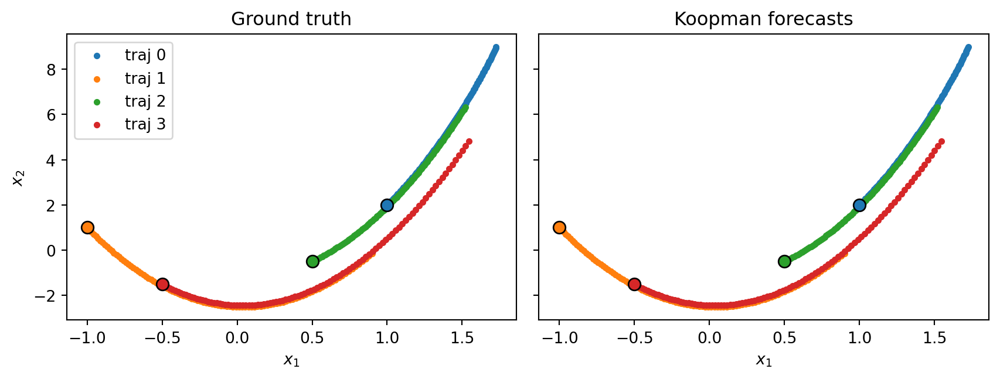

Show imports
import torch
from torchdiffeq import odeint
from dataclasses import dataclass
import matplotlib.pyplot as plt
import numpy as np
from einops import rearrangeIn many systems Koopman models live in complex space, even when the physical variables are real. This impacts the way we do our temporal integration and our reconstruction.
We illustrate this on the nonlinear system
\[ \begin{aligned} \dot{x}_1 &= a\,x_1 - \omega\,x_2 + \omega c\,x_1^2 \\ \dot{x}_2 &= \omega\,x_1 + a\,x_2 + a c\,x_1^2 - 2 c \omega\,x_1 x_2 + 2 c^2 \omega\,x_1^3 \end{aligned} \]
whose flow we integrate below with parameters \((a, \omega, c) = (1, 4, 3)\).
import torch
from torchdiffeq import odeint
from dataclasses import dataclass
import matplotlib.pyplot as plt
import numpy as np
from einops import rearrange@dataclass
class ComplexPoint:
a: float
c: float
w: float
def f(self, t, x):
"""x (..., 2) -> dx/dt (..., 2)"""
x1, x2 = x[..., 0], x[..., 1]
xp1 = self.a * x1 - self.w * x2 + self.w * self.c * x1**2
xp2 = (
self.w * x1
+ self.a * x2
+ self.a * self.c * x1**2
- 2 * self.c * self.w * x1 * x2
+ 2 * self.c**2 * self.w * x1**3
)
return torch.stack([xp1, xp2], dim=-1)
fp = ComplexPoint(1.0, 3.0, 4.0)
x0 = torch.tensor([1., 2.])
t_int = torch.linspace(0, 2, 100)
x_gt = odeint(fp.f, x0, t_int)# vector field over the region spanned by the trajectory
(x1_min, x2_min), (x1_max, x2_max) = x_gt.min(0).values, x_gt.max(0).values
mx1, mx2 = 0.1 * (x1_max - x1_min), 0.1 * (x2_max - x2_min)
g1 = torch.linspace(x1_min - mx1, x1_max + mx1, 25)
g2 = torch.linspace(x2_min - mx2, x2_max + mx2, 25)
G1, G2 = torch.meshgrid(g1, g2, indexing="xy")
dxdt = fp.f(0.0, torch.stack([G1, G2], dim=-1)) # (25, 25, 2)
plt.figure(figsize=(5, 4))
plt.title("State-space trajectory")
plt.streamplot(g1.numpy(), g2.numpy(), dxdt[..., 0].numpy(), dxdt[..., 1].numpy(),
color="0.7", density=1.0, linewidth=0.6, arrowsize=0.7)
sc = plt.scatter(*x_gt.T, c=t_int, zorder=3)
plt.xlabel(r"$x_1$")
plt.ylabel(r"$x_2$")
plt.colorbar(sc, label="t")
plt.show()
\[ \kpsi_j(x_t) = e^{\klam_j t}\,\kpsi_j(x_0) = e^{(\gamma+\omega i)t}\, r_j(x_0)\, e^{i\varphi_j(x_0)} = r_j(x_0)\,e^{\gamma t }\, e^{i(\varphi_j(x_0) +\omega t)} \]
Thus we just have a scaling in magnitude and a shift in phase. These two contributions decouple, which makes the dynamics easier to apply in a polar representation than in Cartesian coordinates.
In order to check if observed values follow a linear relationship we can:
Check if their magnitude has an exponential relationship \(\log(\frac{r(t)}{r(0)}) = \gamma t\)
Check if their angle has a common shift: \(\varphi(t) - \varphi(0) = \operatorname{mod}_{2\pi}(\omega t)\)
As in the nonlinear example we test two candidates: the true eigenfunction \(\kpsi\) and a guess \(f\) which is not one.
# True eigenfunction
def psi(x):
x1, x2 = x[..., 0], x[..., 1]
return torch.complex(x1, x2 - fp.c * x1**2)
# Test one (not an eigenfunction)
def f(x):
x1, x2 = x[..., 0], x[..., 1]
return torch.complex(x1 + x2, x1 - x2)fig, axs = plt.subplots(1, 3, figsize=(11, 3.5))
axs[0].set_title('Physical coordinates')
axs[0].scatter(*x_gt.T, c=t_int)
axs[0].set_xlabel(r"$x_1$")
axs[0].set_ylabel(r"$x_2$")
axs[1].set_title(r'Koopman coordinates ($\psi$)')
axs[1].scatter(psi(x_gt).real, psi(x_gt).imag, c=t_int)
axs[1].set_xlabel(r"$real$")
axs[1].set_ylabel(r"$imag$")
axs[2].set_title(r'$f$ coordinates')
axs[2].scatter(f(x_gt).real, f(x_gt).imag, c=t_int)
axs[2].set_xlabel(r"$real$")
axs[2].set_ylabel(r"$imag$")
fig.tight_layout()
plt.show()
For the second step you need to unwrap the angles to identify \(\omega\):
psi_w = psi(x_gt).angle()
psi_w_uw = np.unwrap(psi_w.numpy())
fig, axs = plt.subplots(1, 2, figsize=(9, 3.5), sharex=True)
for ax, y, title in zip(axs, (psi_w, psi_w_uw), ('Angles', 'Unwrapped angles')):
ax.plot(t_int, y, color='0.7', lw=0.8, zorder=1)
ax.scatter(t_int, y, c=t_int, cmap='viridis', s=3, zorder=2)
ax.set_title(title)
ax.set_xlabel(r"$t$")
ax.set_ylabel(r"$\psi$ angle [rad]")
fig.tight_layout()
plt.show()
Here we need to adapt our technique to test if the projected trajectory follows a linear dynamic in complex space:
def polar_rates(px):
"""Per-timepoint estimates of (gamma, omega) from a complex sequence px (T,)"""
gammas = torch.log(px[1:].abs() / px[0].abs()) / t_int[1:]
angles = torch.from_numpy(np.unwrap(px.angle().numpy())).float()
omegas = (angles[1:] - angles[0]) / t_int[1:]
return gammas, omegas
for name, p in {"psi": psi, "f": f}.items():
gammas, omegas = polar_rates(p(x_gt))
print(f"{name:3s} gammas:", torch.round(gammas[::10], decimals=2))
print(f"{name:3s} omegas:", torch.round(omegas[::10], decimals=2))psi gammas: tensor([1., 1., 1., 1., 1., 1., 1., 1., 1., 1.])
psi omegas: tensor([4., 4., 4., 4., 4., 4., 4., 4., 4., 4.])
f gammas: tensor([13.0000, 6.5600, 2.7200, 0.5200, 2.8200, 2.9100, 1.6300, -0.3200,
2.4100, 2.5000])
f omegas: tensor([-3.7600, -1.2600, -0.6500, -0.9400, -0.7000, -0.5300, -0.5000, -3.7000,
-4.0900, -3.6500])fig, axs = plt.subplots(1, 3, figsize=(9.6, 2.8), sharex=True)
axs[0].plot(t_int, x_gt[:, 0], label=r"$x_1$")
axs[0].plot(t_int, x_gt[:, 1], label=r"$x_2$")
axs[0].set_title("physical variables")
axs[0].set_ylabel("state")
for name, p in {r"$\psi$": psi, r"$f$": f}.items():
px = p(x_gt)
axs[1].plot(t_int, px.abs(), label=name)
axs[2].plot(t_int, np.unwrap(px.angle().numpy()), label=name)
axs[1].set_yscale("log")
axs[1].set_title("magnitude (log scale)")
axs[1].set_ylabel("magnitude")
axs[2].set_title("unwrapped angle [rad]")
axs[2].set_ylabel("angle [rad]")
for ax in axs:
ax.set_xlabel("t")
ax.legend()
fig.tight_layout()
plt.show()
The estimates for \(\kpsi\) settle on constant values, from which we read off \(\gamma\) and \(\omega\), while the estimates for \(f\) drift:
| Candidate | \(\gamma\) | \(\omega\) | Eigenfunction? |
|---|---|---|---|
| \(\kpsi(x) = x_1 + i(x_2 - c x_1^2)\) | \(1\) | \(4\) | ✓ |
| \(f(x) = (x_1{+}x_2) + i(x_1{-}x_2)\) | drifts | drifts | ✗ |
Once we have the eigenfunctions and eigenvalues we can use them to forecast future timesteps:
# From all the estimations we consider the average as the values
gammas, omegas = polar_rates(psi(x_gt))
gamma, omega = gammas.mean(), omegas.mean()
psi_0 = psi(x_gt[0])
psi_0_r, psi_0_w = psi_0.abs(), psi_0.angle()
tilde_psi_t_r, tilde_psi_t_w = torch.exp(gamma * t_int) * psi_0_r, psi_0_w + omega * t_int
tilde_psi_t = torch.polar(tilde_psi_t_r, tilde_psi_t_w)psi_gt = psi(x_gt)
fig, axs = plt.subplots(1, 2, figsize=(9, 3.5), sharex=True, sharey=True)
sc = axs[0].scatter(psi_gt.real, psi_gt.imag, c=t_int)
axs[1].scatter(tilde_psi_t.real, tilde_psi_t.imag, c=t_int)
axs[0].set_title(r"True $\psi(x_t)$")
axs[1].set_title(r"Forecast $\tilde{\psi}_t$")
# initial state is given, circle it in red
for ax, z0 in zip(axs, (psi_gt[0], tilde_psi_t[0])):
ax.scatter(z0.real, z0.imag, facecolors='none', edgecolors='red',
s=120, linewidths=1.5, zorder=3)
fig.colorbar(sc, ax=axs, label="t")
for ax in axs:
ax.set_xlabel("Re")
axs[0].set_ylabel("Im")
plt.show()
As we showed in the complex notebook, Koopman eigenfunctions always come with their conjugate, which lets us retrieve the real state at reconstruction time. As we want to learn \(\kv_j = \alpha_j + \beta_j i\) which is the weight given to an eigenfunction in the reconstruction we can show:
\[ \begin{align} \min_{\kvb \in \mathbb C^{J}} ||\kg(x) - \sum_j^J \kv_j \kpsi_j(x)|| &= ||\kg(x) - \sum_j^{J/2} \big(\kv_j \kpsi_j(x) + \bar{\kv}_j \bar{\kpsi}_j(x)\big)||\\ &= ||\kg(x) - \sum_j^{J/2} \big((\alpha_j + \beta_j i)(a_j(x) + b_j(x)i) + (\alpha_j - \beta_j i)(a_j(x) - b_j(x)i)\big)||\\ &= ||\kg(x) - 2\sum_j^{J/2} \big(\alpha_j a_j(x) - \beta_j b_j(x)\big)||\\ \end{align} \]
So we end up doing a linear regression with the real and imaginary parts of the eigenfunction. The good news is that if we didn’t include the conjugate of \(\kpsi_j\) in our chosen eigenbasis, this method doesn’t need it: it leads to the same reconstruction as if we had. And if the conjugate is present, the weights simply adapt.
We can use the eigenlattice property to improve the representation of \(\kg(x)\). In the previous section we stated that each eigenfunction has its conjugate and that we didn’t need to include it given the way we do reconstruction. Although something interesting is that they can take part in the eigenlattice and that \(\kpsi_j \bar{\kpsi}_j\) is an eigenfunction too! Which increases the expressivity of the eigenspace.
xs = torch.randn(10, 2)
Psi = lambda x: torch.stack([psi(x), psi(x)**2, psi(x) * psi(x).conj()], dim=-1) # (n, J)
def complex_to_component(z):
"""
z (n, J) complex -> (n, 2J) real
Take a complex tensor and return a real tensor with the two components stacked
"""
r = torch.view_as_real(z)
r_flat = rearrange(r, 'n J c -> n (J c)')
return r_flat
V = torch.linalg.lstsq(complex_to_component(Psi(xs)), xs).solution.T
tilde_x_gt = complex_to_component(Psi(x_gt)) @ V.Tfig, axs = plt.subplots(1, 2, figsize=(9, 3.5), sharex=True, sharey=True)
axs[0].set_title("True")
axs[1].set_title("Reconstruction")
axs[0].scatter(*x_gt.T)
axs[1].scatter(*tilde_x_gt.T)
for ax in axs:
ax.set_xlabel(r"$x_1$")
axs[0].set_ylabel(r"$x_2$")
fig.tight_layout()
plt.show()
So we can summarise the forecast with the following figure: compute the eigenfunctions, project them forward with the polar form and recompose linearly to form the physical state:

Gammas = torch.tensor([gamma, 2 * gamma, 2 * gamma]) # (J)
Omegas = torch.tensor([omega, 2 * omega, 0]) # (J)
def forecast_from(x0):
"""Koopman forecast of the whole trajectory from an initial state x0."""
psi_0 = Psi(x0)
psi_0_r, psi_0_w = psi_0.abs(), psi_0.angle() # (J), (J)
psi_r = torch.exp(Gammas[None] * t_int[:, None]) * psi_0_r[None] # (T, J)
psi_w = psi_0_w[None] + Omegas * t_int[:, None] # (T, J)
psi_t = complex_to_component(torch.polar(psi_r, psi_w)) # (T, (2*J))
return psi_t @ V.T
# several initial states, each giving its own trajectory
x0s = torch.tensor([[1.0, 2.0], [-1.0, 1.0], [0.5, -0.5], [-0.5, -1.5]])
t_int = torch.linspace(0, 0.2, 100)
gts = [odeint(fp.f, x0, t_int) for x0 in x0s] # ground-truth integration
forecasts = [forecast_from(x0) for x0 in x0s] # Koopman forecast from x0fig, axs = plt.subplots(1, 2, figsize=(9, 3.5), sharex=True, sharey=True)
axs[0].set_title("Ground truth")
axs[1].set_title("Koopman forecasts")
for k, (x_true, x_fore) in enumerate(zip(gts, forecasts)):
color = f"C{k}"
axs[0].scatter(*x_true.T, s=10, color=color, label=f"traj {k}")
axs[1].scatter(*x_fore.T, s=10, color=color)
for ax in axs:
ax.scatter(*x0s[k], color=color, edgecolors="k", s=60, zorder=3)
axs[0].legend()
for ax in axs:
ax.set_xlabel(r"$x_1$")
axs[0].set_ylabel(r"$x_2$")
fig.tight_layout()
plt.show()